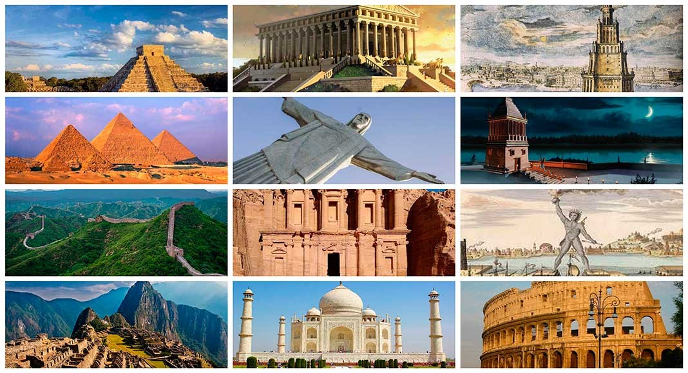

La Gran Muralla China
La Gran muralla China es una antigua fortificación china construida y reconstruida entre el siglo V a. C. y el siglo XVI (Edad Moderna) para proteger la frontera norte del Imperio chino durante las sucesivas dinastías imperiales de los ataques de los nómadas xiongnu de Mongolia y Manchuria. Contando sus ramificaciones y construcciones secundarias, se calcula que tiene unos 21 200 kilómetros de largo,1 desde la frontera con Corea, al borde del río Yalu, hasta el desierto de Gobi, a lo largo de un arco que delinea aproximadamente el borde sur de Mongolia Interior, aunque hoy solo se conserva un 30 % de ella.2En promedio, mide de 6 a 7 metros de alto y de 4 a 5 metros de ancho. La muralla fue designada Patrimonio de la Humanidad por la Unesco en 1987.3. El 26 de enero de 2007 se dio a conocer que la muralla china fue elegida como una de las ganadoras en la lista de Las Nuevas Siete Maravillas del Mundo Moderno.
Estatua de Zeus en Olimpia
La Estatua de Zeus en Olimpia fue una escultura crisoelefantina creada por el escultor Fidias. Situada en Olimpia, (Grecia), se consideraba una de las Siete Maravillas del Mundo Antiguo. Fue destruida y se perdió en el siglo V d. C., y solo se sabe de ella gracias a descripciones de historiadores antiguos y representaciones en monedas. La estatua ocupaba la totalidad del ancho del pasillo del templo construido para albergarla. De acuerdo con una fuente contemporánea medía aproximadamente doce metros de alto. Zeus fue esculpido en marfil (o modelado, pues en la realización el marfil se remojaba en un líquido que lo hacía más maleable), y los detalles dorados eran de oro macizo. Según Pausanias, Zeus aparecía sentado en un trono con el torso desnudo y el manto en torno a las piernas, llevaba la cabeza coronada de olivo y la mirada, dirigida hacia abajo le confería aspecto paternal. En la mano derecha sostenía una Niké y en la izquierda el cetro rematado por un águila; el manto estaba adornado de lirios y las sandalias eran de oro. El trono era en sí mismo una obra de arte, hecho a base de marfil, ébano, oro y piedras preciosas; el respaldo, los brazos, los pies y los travesaños entre ellas iban labrados y decorados con relieves posteriormente copiados y reproducidos por separado, como en el caso de la escultura de Atenea Pártenos.